Intersections between objects
Contents
Intersections between objects#
In computer graphics it is useful to be able to determine where objects intersect or collide. Examples of where this is used in practice is finding out where polygons intersect with planes in binary space partitioning and the calculations of collisions of moving elements in a computer game. Here we will look some of the most common object-on-object intersections.
Intersection of two lines#
Consider the intersection of two lines defined by the vector equations \(\mathbf{p}_1 + t_1\mathbf{d}_1\) and \(\mathbf{p}_2 + t_2\mathbf{d}_2\).
{kind=link}
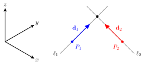
Fig. 14 The intersection between the two lines \(\ell_1\) and \(\ell_2\).#
Depending on the values of \(\mathbf{p}_1\), \(\mathbf{p}_2\), \(\mathbf{d}_1\) and \(\mathbf{d}_2\) we may have one of the following scenarios
the two lines intersect;
the two lines are parallel and do not intersect;
the two lines neither intersect or are parallel and so are skew.
Intersecting lines#
If the two lines intersect between then the point of intersection is the point that passes through both of the lines. We can find this point by equating the vector equations of the lines and attempt to solve for \(t_1\) and \(t_2\). If no values exists for \(t_1\) and \(t_2\) that satisfies all co-ordinates then the lines do not intersect.
Example 9
Three lines in \(\mathbb{R}^3\) are defined as \((1,-3,0) + t_1(1,2,1)\), \((6,-5,-1) + t_2(-1,2,1)\) and \((6,-11,-2)+t_3(2,2,-1)\). Determine the points of intersection between the three lines (if possible).
Solution
Let \(\mathbf{p}_1 = (1, -3, 0)\), \(\mathbf{p}_2 = (6, -5, -1)\), \(\mathbf{p}_3 = (6, -11, -2)\), \(\mathbf{d}_1 = (1, 2, 1)\), \(\mathbf{d}_2 = (-1, 2, 1)\) and \(\mathbf{d}_3 = (2, 2, -1)\). Equating the first two lines gives
The third equation is \(t_1 = t_2 - 1\) and substituting into the first equation gives \(t_2 = 3\) so \(t_1 = 2\). Substituting these into the second equation gives \(-3 + 2(2) = -5 + 2(3)\) which is \(1 = 1\) so \(\ell_1\) and \(\ell_2\) intersect. To find the point of intersection we substitute \(t_1\) or \(t_2\) into the vector equations gives
So the first two lines intersect at \((3, 1, 2)\).
Equating the first and third lines gives
Substituting the third equation into the first equation gives \(t_3 = -\frac{7}{3}\) which substituted into the third equation gives \(t_1 = -\frac{14}{3}\). Substituting these into the second equation gives \(-24 = -18\) which is a contradiction so no values of \(t_1\) or \(t_3\) satisfy all co-ordinates so these lines do not intersect.
Equating the second and third lines gives the system
The third equations give \(t_2 = -1 - t_3\) which substituted into the first equation gives \(7+t_3 = 6 + t_3\) which is a contradiction so these lines do not intersect.
Parallel lines#
If two lines with vector equations \(\mathbf{p}_1 + t_1\mathbf{d}_1\) and \(\mathbf{p}_2 + t_2\mathbf{d}_2\) are parallel then the direction vectors are also parallel, i.e., \(\mathbf{d}_1 = k\mathbf{d}_2\) where \(k \neq 0\) (Fig. 15).
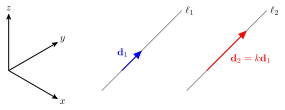
Fig. 15 The lines \(\ell_1\) and \(\ell_2\) are parallel in \(\mathbb{R}^3\).#
Example 10
Two lines are defined by the vector equations \((1, 0, 2) + t_1(1, 0, 1)\) and \((1, 3, -2) + t_2(1, 0, -1)\). Show that these lines are not parallel.
Solution
Two lines are parallel \(\mathbf{d}_1 = k\mathbf{d}_2\)
Here we have a contradiction so no value of \(k\) exists to satisfy \(\mathbf{d}_1 = k\mathbf{d}_2\) so \(\ell_1\) and \(\ell_2\) are not parallel.
Skew lines#
If two lines do not intersect and they are not parallel then they are skew lines (Fig. 16)
{kind=link}
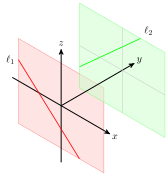
Fig. 16 The lines \(\ell_1\) and \(\ell_2\) are skew lines.#
Example 11
Show that the lines \(\ell_1\) and \(\ell_2\) from Example 10 are skew lines.
Solution
We have shown in example 4.3 that \(\ell_1\) and \(\ell_2\) are not parallel. Therefore to we need to show that they do not intersect. Equating \(\ell_1\) and \(\ell_2\) gives
Here the second equation is a contradiction so this system is inconsistent and the lines \(\ell_1\) and \(\ell_2\) do not intersect. Since \(\ell_1\) and \(\ell_2\) are not parallel and do not intersect then they must be skew.
Intersection between a line and a sphere#
Consider the possible intersection with a line defined by \(\mathbf{p} + t\mathbf{d}\) and a sphere centred at \(\mathbf{c}\) with radius \(r\) where \(\mathbf{r}\) is the point of intersection. Depending on the values of these we have the following three scenarios
the line intersects with the sphere twice;
{kind=link}
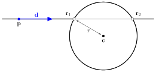
Fig. 17 The line intersects with the sphere twice.#
the line intersects with the sphere once;
{kind=link}
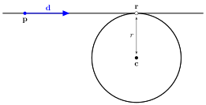
Fig. 18 The line intersects with the sphere once.#
the line does not intersect with the sphere.
{kind=link}
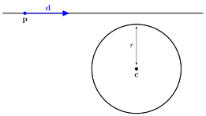
Fig. 19 The line does not intersect with the sphere.#
An intersection will occur when the distance between the centre of the sphere and point on the line is equal to the radius of the sphere
Substituting in the equation of the line \(\mathbf{r} = \mathbf{p} + t\mathbf{d}\) and rearranging gives
This is a quadratic equation where the roots give the value of the parameter \(t\) where the intersection(s) occur (note that \(\mathbf{d}^2 = \mathbf{d} \cdot \mathbf{d}\)). Let
then the solution is given by the quadratic formula
A quadratic equation can have two, one or no real roots depending on the value of the discriminant \(b^2 - 4ac\) which correspond to the three scenarios presented above
Example 12
A line is defined by the vector equation \((1, 0, 2) + t(2, 1, 1)\) and a sphere positioned so that its center is at \((5, 3, 1)\) and has radius \(r=2\). Does the line intersect with the sphere and if so, where?
Solution
Let \(\mathbf{p} = (1,0,2)\), \(\mathbf{d} = (2,1,0)\) and \(\mathbf{c}=(5,3,1)\) then at the point of intersection the value of \(t\) satisfies \(0 = t^2 \mathbf{d}^2 + 2 t (\mathbf{p} - \mathbf{c}) + (\mathbf{p} - \mathbf{c})^2 - r^2\). Let
then \(b^2 - 4ac = 22^2 - 4(5)(22) = 44\) which is greater than zero so there are two intersection points. The values of \(t\) are
so the intersection points are at
Intersections with planes#
Recall that a plane can be defined using the point-normal equation of a plane
where \(\mathbf{n}\) is a normal vector for the plane, \(\mathbf{p}\) is a point on the plane and \(s\) is a scalar.
Intersection of a line and a plane#
Consider the intersection of a line defined by \(\mathbf{q} + t\mathbf{d}\) and the plane which passes through the point \(\mathbf{p}\) and has a normal vector \(\mathbf{n}\). Here we have two scenarios to consider
the line intersects with the plane at a single point \(\mathbf{r}\);
the line is parallel to the plane and does not intersect with it.
{kind=link}
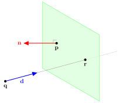
Fig. 20 Intersection between a line and a plane.#
If the line is parallel to the plane then \(\mathbf{d}\) is perpendicular to \(\mathbf{n}\) which occurs when
If the line is not perpendicular then we can determine the point of intersection \(\mathbf{r}\) by using the fact that the normal vector \(\mathbf{n}\) is perpendicular to the vector \(\mathbf{r} - \mathbf{p}\), i.e.,
Substituting \(\mathbf{r} = \mathbf{q} + t\mathbf{d}\) and rearranging gives
Theorem 2 (Intersection between a line and a plane)
The point of intersection between a line that passes through point \(\mathbf{q}\) in the direction \(\mathbf{d}\) and the plane which passes through the point \(\mathbf{p}\) with a normal vector \(\mathbf{n}\) is \(\mathbf{r} = \mathbf{p} + t\mathbf{d}\) where
Example 13
A line defined by the equation \((0, 1, 1) + t(3, 1, -2)\) intersects a plane with the normal vector \((-3, -1, 1)\) and which passes through the point \((8, 2, 3)\). Calculate the co-ordinates of the point of intersection between the line and the plane.
Solution
Here \(\mathbf{q} = (0, 1, 1)\), \(\mathbf{d} = (3, 1, -2)\), \(\mathbf{n} = (-3, -1, 1)\) and \(\mathbf{p} = (8, 2, 3)\). Calculating \(t\)
Calculating the intersection point
Intersecting planes#
With the intersection between two planes we have three scenarios to consider:
the two planes intersect at an infinite number of points along a straight line;
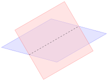
Fig. 21 Two intersecting planes.#
the two planes are parallel and do not intersect;
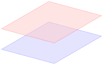
Fig. 22 Two parallel planes.#
the two planes are coincident and intersect at an infinite number of points along a straight line.
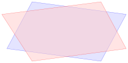
Fig. 23 Two coincident planes.#
Two planes defined by the point-normal equations \(\mathbf{n}_1 \cdot \mathbf{p}_1 = s_1\) and \(\mathbf{n}_2 \cdot \mathbf{p}_2 = s_2\) are parallel if \(\mathbf{n}_1 = k \mathbf{n}_2\) for \(k \neq 0\). Two parallel planes are coincident if \(s_1 = s_2\)
If two planes are not parallel or coincident then they intersect along a line that is perpendicular to both of the normal vectors for the planes, therefore the direction vector is
To describe the line we also need the co-ordinates of a single point, \(\mathbf{r}\) along the line, i.e., a point that satisfies both
Subtracting one from the other and rearranging gives
Let \(\mathbf{r} = (x,y,z)\) then
So we have an expression with three unknowns, \(x\), \(y\) and \(z\). For simplicity let \(y=z=0\) then
so \(\mathbf{r} = ((s_1 - s_2) / (n_{1x} - n_{2x}), 0, 0)\).
Example 14
Two non-parallel planes are defined by the equations \((3,-4,1)\cdot \mathbf{p} = 5\) and \((1,1,-1)\cdot \mathbf{q} = 2\) respectively. Find the intersection of these two planes
Solution
The normal vectors for these planes are \(\mathbf{n}_1 = (3, -4, 1)\) and \(\mathbf{n}_2 = (1, 1, -1)\) respectively. Calculate the direction vector for the line of intersection
Calculate a point which is on the line of intersection
therefore \(\mathbf{r} = (3/2, 0, 0)\) so the intersection of the two planes is along the line \((3/2, 0, 0) + t(3, 4, 7)\).
Intersection between a sphere and a plane#
Consider the possible intersection with a sphere centred at position \(\mathbf{c}\) with radius \(r\) traveling in a straight line in the direction of \(\mathbf{d}\) with plane that passes through the point \(\mathbf{p}\) with normal vector \(\mathbf{n}\) (Fig. 24).
{kind=link}
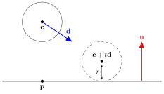
Fig. 24 The intersection between a sphere with a plane.#
A collision occurs when the distance between the centre at \(\mathbf{c} + t\mathbf{d}\) and the plane is equal to the radius of the sphere. This distance is given by equation (18) which is written below
where \(\mathbf{q}\) is a point not on the plane. In our case \(\mathbf{q} = \mathbf{c} + t \mathbf{d}\)
so
This formula gives that value of \(t\) where a collision occurs. However, this assumes that a collision will occur, there are two other scenarios we need to consider:
the sphere is moving parallel to the plane;
{kind=link}
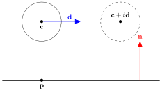
Fig. 25 The sphere is moving parallel to the plane.#
the sphere is moving away from the plane.
{kind=link}
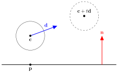
Fig. 26 The sphere is moving away from the plane.#
When the sphere is moving parallel to the plane this angle is \(\pi/2\), using the geometric definition of the dot product
and since \(\cos(\pi/2) = 0\) then if \(\mathbf{d} \cdot \mathbf{n} = 0\) then we know that the sphere is moving parallel to the plane. For the scenario where the sphere is moving away from the plane we need to consider whether the sphere is in relation to the normal vector. If the sphere is in the space that the normal vector is pointing towards, known as being in front of the plane, then the distance between \(\mathbf{c}\) and the plane will be positive, i.e.,
We can adapt the formula derived above for calculating \(t\) to take this into account
where \(\operatorname{sign}(x)\) returns \(1\) if \(x>0\) or \(-1\) is \(x<0\). If equation (12) returns a negative value then the sphere is moving away from the plane.
Example 15
A sphere centred at \((-2, 3, 0)\) with radius 1 is traveling along a straight line in the direction \((1, -1, -1)\). A plane passes through the point \((1, -4, 2)\) with a normal vector \((2, -1, 2)\). Does the sphere collide with the plane and if so, what is the co-ordinates of the centre of the sphere at the point of collision?
Solution
In this case \(\mathbf{c} = (-2,3,0)\), \(r=1\), \(\mathbf{d} = (1, -1, -1)\), \(\mathbf{p} = (1, -4, 2)\) and \(\mathbf{n} = (2, -1, 2)\). First we check whether the sphere is traveling parallel to the plane
so the sphere is not moving parallel to the plane. Using equation (12) to calculate \(t\)
So \(t\) is positive so the sphere does collide with the plane. The centre of the sphere at the point of collision is